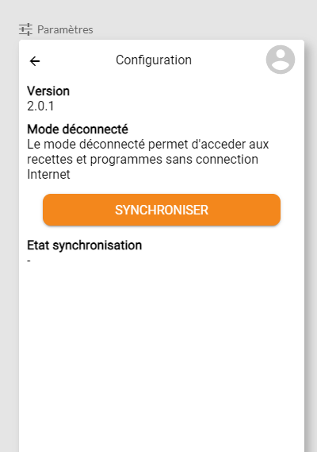
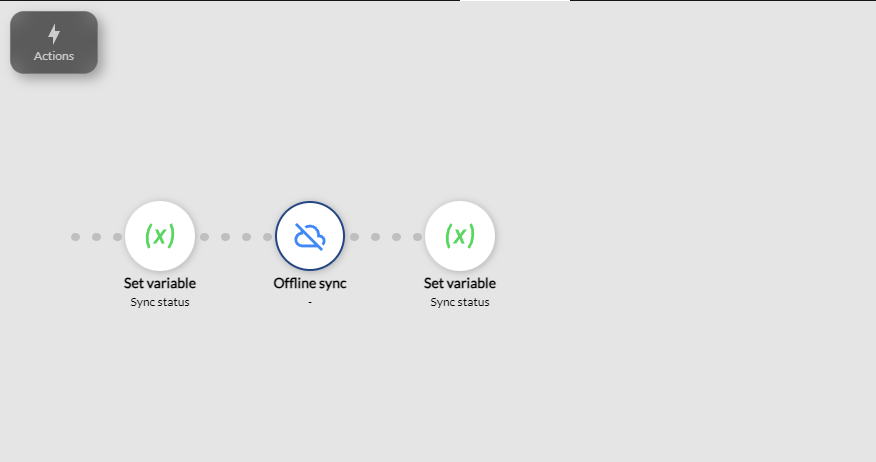

Offline Mode
The Offline mode of your mobile application allows users to use the app without an internet connection.
Available from the Enterprise plan.
This mode is particularly useful for users in areas with unstable or nonexistent connectivity. Here are the detailed steps to activate and use Offline mode.
Activating Offline Mode
From Zyllio Studio, open your mobile application and navigate to the Settings section.
You will find an option titled Offline; toggle the Enable button to allow the application to function without an internet connection.

Simply activating Offline mode is not enough to start using the application offline. An initial synchronization is required to download the necessary data for offline use.
Data Synchronization
Once Offline mode is activated, it is essential to synchronize the data to use the application properly offline. This synchronization downloads the necessary data so that it is available without a connection.
A synchronization button is needed, and this button can be placed on the screen that you find most convenient for the user, such as the home screen or a specific data management screen.

The synchronization button uses the Offline sync action, which does not require any special configuration.

Using Offline Mode
Click the Synchronize (or Sync) button to initiate the data synchronization. Once this operation is complete, all the necessary information for using the application will be stored locally on your device.
After synchronization, you will see a confirmation message indicating that the synchronization was successful. You can now use the application without an internet connection.
When the application is connected to the network, Offline mode remains operational. However, it prioritizes online information when available and updates its offline cache accordingly.
Limitations
Currently, automatic updates of the application in Offline mode are not supported.
If you have an urgent need for specific updates or a feature related to updates in Offline mode, we encourage you to submit your request directly to the Product Manager via the dedicated product Slack forum.